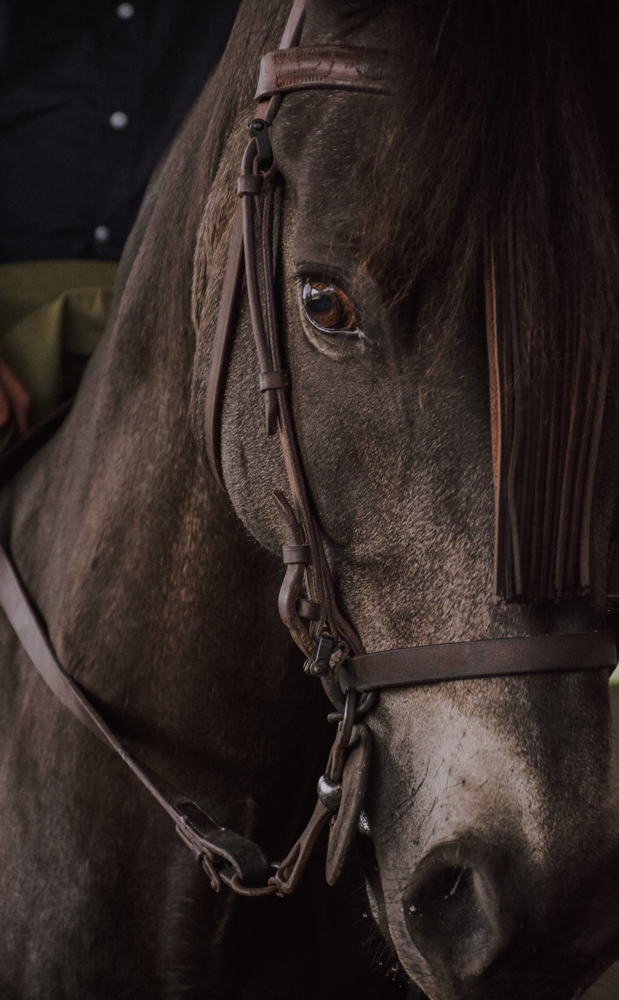
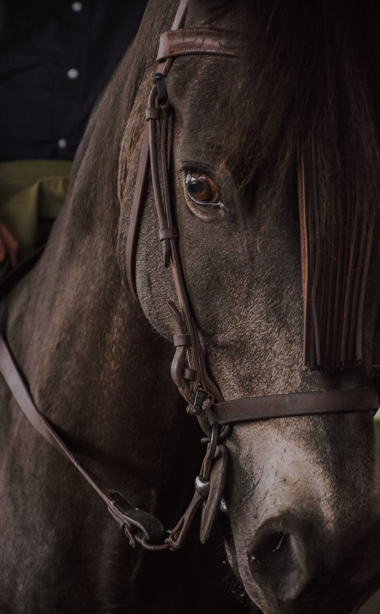

Foal care -
Timeline -
Once a foal turns 3-4 weeks old it should have its feet done, cleaned/clipped.
After this process a foal should have their hooves cleaned/picked 4-6 times a week.
Foals should be checked by the farrier every 2-3 weeks.
Birthing process -
facts -
Put a small level of iodine on the foal's umbilical stump. Make sure the foal (including orphan foals) receives colostrum soon after birth. Make sure the foal is protected against tetanus, either through the colostrum or by a tetanus antitoxin injection.
The foal should stand within one hour of delivery, nurse within two hours, and the placenta should pass within three hours.
Birthing timeline
The mare's udder begins filling with milk two to four weeks prior to foaling.
The muscles of the vulva and croup relax. The tailhead may become more prominent a few days prior to foaling.
The teats become engorged four to six days prior to foaling.
How to care for a pregnant mare!
If you know your mare is going to foal in a few days you can help by making sure the inside of her legs and underside are clean. you can even rap her tail to keep it out of the way.
You can also make sure the stall is clean and has plenty of bedding. If you want to have a separate medical stall for the mare during this process that can really help.
mares typicly give birth at night to avoid predators, you could stay up all night and keep an eye on her or you could put up cameras, that is completely up to you.
 
